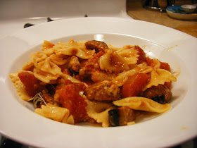

Bats and Cobwebs

Ingredients
- 1 (8 ounce) package farfalle (bow tie) pasta
- 1 pound ground beef
- 1 small onion, chopped (Optional)
- 1 (28 ounce) jar pasta sauce
- 8 ounces mozzarella cheese, cut into 1/2 inch cubes
- ¼ cup grated Parmesan cheese
Instructions
- Preheat Oven:
- Preheat the oven to 400 degrees F (200 degrees C).
- Cook Pasta:
- Fill a large pot with lightly salted water, bring to a rolling boil over high heat.
- Stir in the bow tie pasta and return to a boil.
- Boil pasta, stirring occasionally, until cooked through but still firm to the bite, about 12 minutes.
- Drain well.
- Prepare the Meat Sauce:
- Cook and stir ground beef and onion in a large skillet until beef is no longer pink, about 5 minutes.
- Drain fat.
- Stir in pasta sauce and bring to a boil.
- Reduce heat to simmer.
- Assemble the Dish:
- Stir cooked pasta and half of the mozzarella cheese into the sauce; toss to combine.
- Transfer to a 2-quart baking dish.
- Top with remaining mozzarella and Parmesan cheese.
- Bake:
- Bake in the preheated oven until lightly browned and bubbly, 15 to 20 minutes.